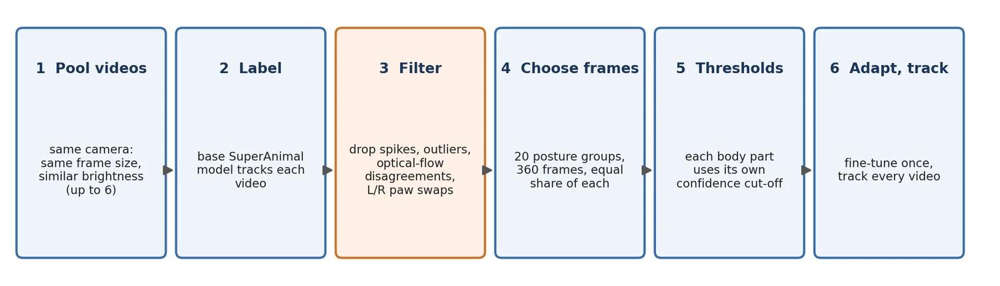
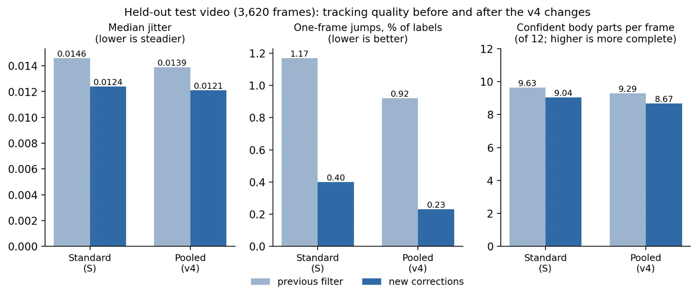

Why adapt at all: the SuperAnimal model was trained on many species and many camera views. Fine-tuning it on your own footage ("video adaptation") usually gives steadier, more complete tracking of your mice than the generic model. Adaptation needs labels, and CUBE has no hand labels, so it uses the model's own confident predictions as pseudo-labels. The weak point of that idea is that some confident predictions are wrong (about one in eight in our checks), and training on them teaches the model its own mistakes. Smart Adapt v4 therefore cleans the pseudo-labels before it trains.
How it works#
- Pick the videos. CUBE checks every video, quarantines unreadable ones, and chooses a representative video (the one closest to the median brightness). It then adds up to five more videos that have the same frame size and the most similar brightness. Videos from one camera in one room are therefore pooled. Videos from a different camera or at a different size are not mixed in.
- Label with the base model. The unadapted SuperAnimal model tracks each pooled video. These predictions are the candidate pseudo-labels.
- Remove labels that look wrong. A keypoint is dropped from the training set when the track around it is implausible:
- a spike: the point jumps away and straight back;
- a Hampel outlier: the point sits far from the median of its neighbouring frames;
- an optical-flow disagreement: the pixels under the label do not move the way the label does between neighbouring frames;
- a paw swap: left and right paw labels exchange places. Each flag also removes the frame on either side.
- Choose frames that cover the animal's postures. All pooled frames are grouped by body posture (20 groups) and CUBE takes the same number from each group, 360 frames in all. Without this, the training set is mostly the animal's most common posture.
- Use a per-body-part threshold. Each of the 24 mouse body points is kept only above its own confidence threshold (the 40th percentile of that point's confidence, limited to the range 0.25 to 0.6). A hard-to-see paw is judged against other paw predictions, not against the confident nose. The 15 SuperAnimal keypoints with no mouse anatomy (antlers, throat, mouth corners and so on) keep the fixed 0.4 threshold.
- Adapt and track. DeepLabCut fine-tunes the model on those frames (30 pose epochs and 10 detector epochs by default), and CUBE tracks every video with the result.
If a step cannot run, CUBE falls back to the standard single-video adaptation and says so in the log. This happens when the model is not SuperAnimal-Quadruped (the recipe needs its body-part names), or when fewer than about 20 usable frames are found.

Settings#
| Setting | Default | What it does |
|---|---|---|
| Smart Adapt (v4) | On | Adapt once and reuse the adapted weights for every video |
| Pooled labels | On | Use the filtered, pooled pseudo-labels above. Off gives the previous behaviour: every confident label of the one representative video |
| Adapt epochs | 30 | Training length |
| Pseudo threshold | 0.40 | Fallback threshold for non-mouse keypoints |
The number of pooled videos is dlc_smart_adapt_pool_max (6) in the session's advanced DLC configuration. Smart Adapt writes its working files to smart_adapt_workspace/<model>/pooled_v4/ in the output folder; pooled_pseudo_report.json there lists how many keypoints were kept or removed and every per-body-part threshold.
What to expect (and what we could not show)#
We tested the recipe on two held-out videos of the same camera, comparing it with standard single-video adaptation trained the same way. Both were then passed through CUBE's previous (pre-v4) filter.

- Steadier tracks. Median frame-to-frame jitter was 5 to 10% lower and the 95th percentile 7 to 9% lower; large one-frame jumps (more than a quarter of a torso length) fell from 1.17% to 0.92% of labels on one video and from 0.97% to 0.84% on the other.
- Slightly fewer confident points. About 0.3 fewer of the 12 main body points were confident per frame.
- No accuracy gain that we could prove. In a manual side-by-side review of 55 frames where the two models disagreed most, the pooled version was picked as the most accurate 21 times and the standard version 25 times (ties count for each). That difference is not significant. Treat Smart Adapt v4 as a way to reduce the influence of wrong pseudo-labels, not as a measured accuracy gain, and check a few labelled videos from your own camera.
If your tracking looks worse after the update, untick Pooled labels to get the previous adaptation back.
In 3D mode (Step 1b)#
Step 1b adapts each camera separately. With Adapt each camera on pooled, filtered labels on (3D DLC Settings, section Pooled Adaptation Labels, default on), CUBE pools that camera's own videos and never mixes in another camera's. The video with the fewest duplicated frames comes first, then the others in the same order, up to Videos pooled per camera (default 4, the size we tested). Three details differ from Step 1a:
- The duplicated fill frames that Step 0 inserted are never used as training frames.
- The pooled videos are the ones already cropped for that camera, so they all have the same frame size.
- If Auto-detect starved cameras lowers the adaptation bounding-box threshold for a camera, the pooled frame selection uses the lower value and the base-model labels are reused, not recomputed.
Everything else (base-model labels, plausibility filter, pose-balanced frames, per-body-part thresholds, fallback to single-video adaptation) is identical. The cost is one base-model tracking pass over each pooled video for each camera before adaptation (four cameras with four videos each is 16 passes); the results are cached in 3d_adapt_workspace/adapt_<cam>/pooled_v4/base/. A camera that was already adapted in an earlier run keeps its cached adaptation, so the setting changes nothing for it: delete 3d_adapt_workspace/adapt_<cam> to adapt that camera again.
What was tested in 3D. The held-out videos behind the numbers in this section came from camera 0 of a four-camera 3D rig, so the quality results are those of camera 0. We also ran the pooled adaptation end to end on cameras 1 and 2 of the same rig, which have different frame sizes (1152x1080 and 750x872). That was a one-epoch smoke test of the mechanics, not a quality test: each camera pooled its own three videos, kept about 59% of the 14,040 candidate keypoints, adapted successfully, and the detector boxes needed by the filter were found. We have not compared full-length pooled and single-video adaptation on cameras 1 to 3.
The corrections applied to every tracked video#
After tracking, CUBE filters each video's keypoints. This is separate from adaptation, runs in Step 1a and 1b, and also applies if you turn Smart Adapt off. In order:
- Temporal gate (per body part). A confident point is flagged when it lies much further than usual from that body part's own median position over the surrounding 17 frames. The limit is learned for each body part from the video itself, so a paw is allowed to move further than a nose.
- Head-group check. If two or more head points are flagged in the same frame, the other head points that also sit far from their recent positions are flagged too. This catches a whole head found on the wrong object.
- Detector-box gate. A confident point outside DeepLabCut's own bounding box of the animal, by more than a margin learned for that body part, is flagged. It does not depend on any other keypoint, so it still works when several points have moved together. It needs the detector's
.jsonfile next to the keypoint file, which DeepLabCut writes; without it this gate does nothing. - Off-body gate, short-gap filling and smoothing work as before (the median filter, gaps of up to 5 frames filled by a straight line).
- Fill cap. A filled point is never reported as confident at the 0.4 display cut-off. It stays in the data, but it is not drawn in the labelled video and is not counted as a confident detection.
Flagged points have their confidence set to zero before smoothing and gap filling, so a wrong detection can neither be smoothed into its neighbours nor used as the end of a filled gap.
On the two test videos these corrections cut median jitter by 5 to 15%, large jumps by about two thirds, and removed every gap-filled point from the confident set, at a cost of about 0.6 fewer confident body points per frame (of 12). The gates flag roughly 2% of confident points.
Known limit. The gates cannot recognise a wrong detection that is inside the animal's bounding box and persistent. For example, a person's face visible through a clear cage wall can be detected as the mouse's head for several seconds. The box gate catches most of this when the face lies outside the animal's box. A wrong detection on top of the mouse itself passes.
The three corrections have switches in the session's advanced DLC configuration: dlc_temporal_gate, dlc_bbox_gate and dlc_fill_conf_cap (all on).